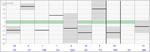

FMIT
Dieser Artikel wurde für die folgenden Ubuntu-Versionen getestet:
Ubuntu 16.04 Xenial Xerus
Zum Verständnis dieses Artikels sind folgende Seiten hilfreich:
FMIT  (Free Music Instrument Tuner) ist ein auf Qt aufsetzendes grafisches Programm zum Stimmen von Musikinstrumenten. Das von Gilles Degottex kann ALSA oder JACK zur Audioeingabe verwenden und beinhaltet alle Funktionen, wie man sie auch von einem üblichen Hardware-Stimmgerät erwartet. Das Programm ist unter der GNU General Public License (GPL) herausgegeben.
(Free Music Instrument Tuner) ist ein auf Qt aufsetzendes grafisches Programm zum Stimmen von Musikinstrumenten. Das von Gilles Degottex kann ALSA oder JACK zur Audioeingabe verwenden und beinhaltet alle Funktionen, wie man sie auch von einem üblichen Hardware-Stimmgerät erwartet. Das Programm ist unter der GNU General Public License (GPL) herausgegeben.
Überblick über einige Funktionen:
Zeigeranzeige für die aktuelle Cent-Abweichung
Frequenzanzeige und Tonname für den aktuell eingespielten Ton
Frei einstellbarer Stimmton/"Kammerton"
Überblick über die aufgenommene Schwingungskurve
Fourieranalyse der Klänge
Intervallverhältnisse (rein und gleichstufig) zu einem Referenzton anzeigen
Statistik über die Schwingungsabweichungen (in Cent)
und mehr.
Installation¶
 |
| FMIT Free Music Instrument Tuner |
FMIT ist in den Quellen enthalten; folgendes Paket muss installiert werden [1].
fmit (universe)
 mit apturl
mit apturl
Paketliste zum Kopieren:
sudo apt-get install fmit
sudo aptitude install fmit
Bei Ubuntu-Varianten mit einem Anwendungsmenü ist das Programm FMIT anschließend unter dem Menüpunkt "Multimedia" oder "Unterhaltungsmedien" zugänglich.
Bedienung¶
Nach dem Start des Programms öffnet sich ein Startfenster, welches bereits die wichtigsten Grundanzeigen präsentiert. Auf der rechten Seite findet sich eine Einstellmöglichkeit für den Stimmton sowie das große Zeigerfeld zum Anzeigen der Centabweichungen des aufgenommenen Tones. Auf der linken Seite bietet das Programm in der Standardeinstellung bereits voraktiviert einen Überblick über die aufgenommene Klangkurve (Ansicht "Aufnahme") und die erkannten Stimmungsabweichungen (Ansicht "Fehler").
Ansichtsfelder¶
Weitere Ansichtsfelder lassen sich bei Bedarf hinzu- oder abwählen.
| Übersicht über die zuschaltbaren Ansichtsfelder | |||
| Schaltfläche | Ansichtsfeld | Beschreibung | Beispiel |
| Ansicht "Aufnahme" | Überblick über die aufgenommene Schwingungskurve. | ||
| Ansicht "Fehler" | Dynamische Historie der Fehlerabweichungen. | ||
| Ansicht "Lautstärke" | Lautstärkenentwicklung des eingespielten Klanges. | ||
| Ansicht "Signalverlauf" | Dynamische Anzeige des Signalverlaufs. | ||
| Ansicht "Harmonische" | Harmonische Oberwellenverhältnisse. | ||
| Ansicht "Fourieranalyse" | Fourieranalyse des eingespielten Klanges (z.B. für Zwecke der Klanganalyse). | ||
| Ansicht "Mikrotonal" | Intervallverhältnisse zu einem Referenzton anzeigen; rein (Bruchzahlen-Verhältnisse) und gleichstufig. | ||
| Ansicht "Statistik" | Historie der letzten erkannten Töne und ihrer Fehlerabweichungen. |  | |
Konfigurationsmöglichkeiten¶
Über die Schaltfläche lässt sich ein Einstellungsfenster aufrufen. Über drei Reiter lassen sich allgemeine Programmeinstellungen wie zum Beispiel die verwendete Stimmung (chromatisch, diatonisch, historische Stimmungen wie Werckmeister, Kirnberger usw.), eine eventuelle Instrumententransposition, das verwendete Aufnahmesystem, die Abtastrate, Filtereinstellungen und vieles mehr festlegen.
Problembehebung¶
In manchen akustisch ungünstigen Situationen, beispielsweise beim Streichen einer Geige, kann es vorkommen, dass die eingespielten Töne nicht präzise erkannt werden. In solchen Fällen kann unter Umständen eine Verbesserung der Erkennungssituation erreicht werden, wenn die Art der Tonerzeugung modifiziert und die Geige beispielsweise gezupft wird.
 Programmübersicht
Programmübersicht - Erstellt mit Inyoka
-
 2004 – 2017 ubuntuusers.de • Einige Rechte vorbehalten
2004 – 2017 ubuntuusers.de • Einige Rechte vorbehalten
Lizenz • Kontakt • Datenschutz • Impressum • Serverstatus -
Serverhousing gespendet von